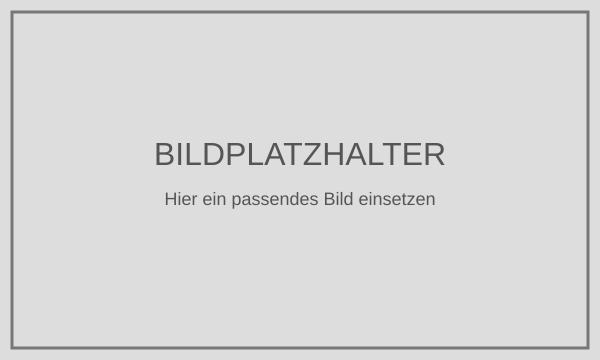

Wir kümmern uns um Hunde und Katzen, die ein neues Zuhause suchen. Die Informationen auf dieser Startseite wurden zuletzt im Vorjahr überarbeitet.
Pfotenfreunde
Tierheim Pfotenfreunde – alte Website | Stand: 2025

Wir kümmern uns um Hunde und Katzen, die ein neues Zuhause suchen. Die Informationen auf dieser Startseite wurden zuletzt im Vorjahr überarbeitet.